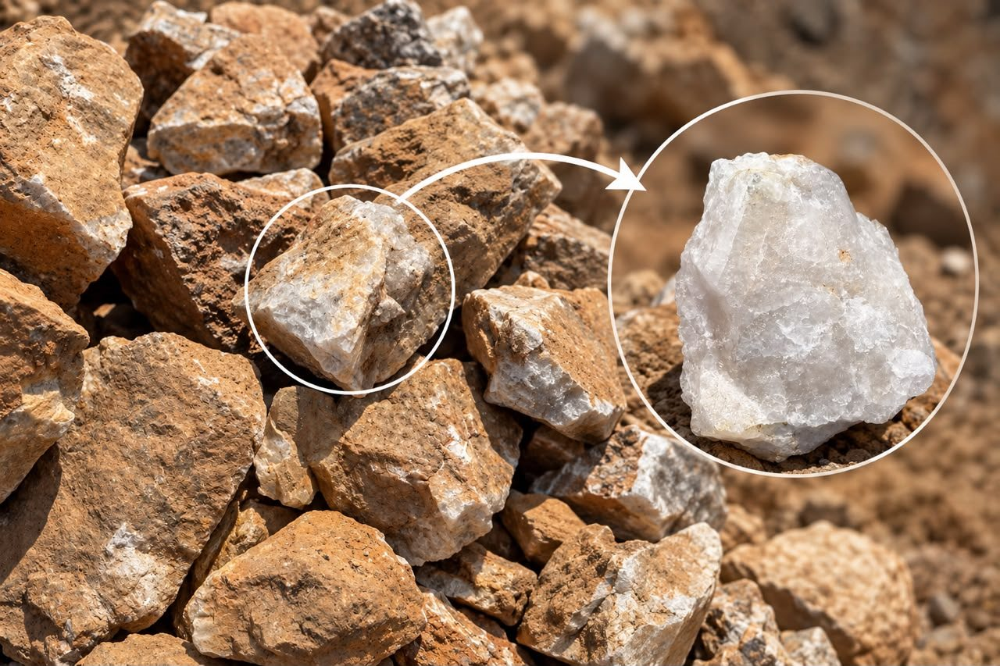

Mineral Sourcing
Support in identifying and discussing relevant mineral material against a stated commodity, supply and documentation requirement.
Omni Minerals
Mineral commodity sourcing, supply, trading and market support shaped around the requirements of mining companies, producers, buyers and industrial customers.
Overview
Omni Minerals supports mineral commodity requirements through documented capabilities in sourcing, commodity trading, buyer and seller representation, and export facilitation.
The focus is on understanding the material requirement, clarifying the commercial context and helping relevant parties move toward a suitable enquiry or transaction discussion.
Availability, origin, quality, documentation, logistics and commercial terms remain subject to confirmation for each specific requirement.
What we support
Each requirement is different. The following capabilities describe how Omni Minerals can support a commodity conversation without assuming a mine, supplier, buyer, volume or destination.
Support in identifying and discussing relevant mineral material against a stated commodity, supply and documentation requirement.
Commercial discussions around documented mineral commodities, with transaction details confirmed directly for the requirement.
Structured communication support between parties seeking to buy, sell or understand a mineral commodity opportunity.
Support with the practical coordination and documentation discussions that may be relevant to an export requirement.

Materials in context
The supplied field photographs show mineral material in its working context. They are presented as representative field imagery and do not establish assay grade, geological identity or commercial quality.
Gold is among the documented commodities Omni Minerals can discuss in response to a defined sourcing, trading or representation requirement.
Documented copper capabilities include copper cathodes and copper concentrates. Any copper ore or other material requirement must be specifically described and verified.
Cobalt and manganese are also included in the documented commodity profile, subject to requirement-specific confirmation.
The photographs on this page are not used to label a sample as gold-bearing, copper-bearing, quartz or any other verified mineral.
How we support operations
Commodity support can help customers frame what they need, identify the information required for a meaningful conversation and keep commercial communication focused.
Why work with Omni Minerals
People, operations and communities come first.
Honest, ethical and transparent in every engagement.
Dependable delivery and consistent quality.
Long-term collaboration built on trust and shared success.


Talk to Omni Minerals about your mineral commodity requirement.